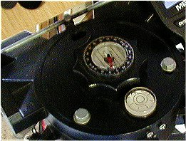
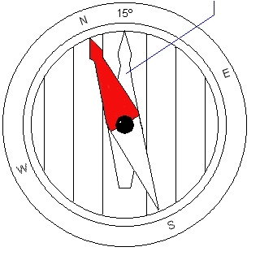
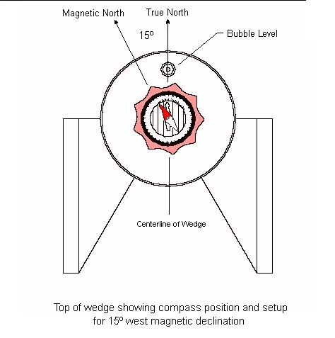

Using the compass on your "LX" Wedge
Although most of us observe from locations where the full sky is available to us, many (including myself) have dark sites or home locations that don't allow us to "see" Polaris or Ursa Minor. In these instances, we have to resort to using a compass to set our tripods as close to true north as possible, without the advantage that Polaris gives us as a reference point. Once we get our tripods set as close as possible, a drift alignment is about the only way we can truly set our tripods/mount in polar alignment.
The Meade LX wedges (with the exception of some older LX5/10 wedges) come with a compass. Although an analog device and not particulary well made, it can be used to get your tripod setup as close as possible without the stars to guide you. It also comes in handy for those instances where you need or wish to set up prior to nightfall. Meade's instructions seemed quite vague to me, and I also noted that their magnetic declination "map" was quite outdated. The magnetic pole drifts, and the most up to date data is needed to properly set up your compass. One of the best sites I've found to find your magnetic declination is here. You'll need your lattitude and longitude to find your current magnetic declination.
I've placed a piece of circular white paper under my compass, to make the arrows more visible. Even in the brightest light, the black background of the knob makes it near impossible to see properly. With the paper underneath, the backside of the compass and the needle are highly visible, even under red light conditions. I'd suggest you start by making one of these to fit under the compass and on top of the knob. You'll probably need to cut out a small hole for the all thread rod. I also replaced the stock level with a larger, easier to read, and more precise level.

White paper under the compass, and the replaced level.
I set and use my compass slightly different from Meade's manual. I set my compass so that the inner bezel is used for true north, and the compass needle is used for magnetic north. The inner bezel arrow is aligned with the level on the tripod head, indicating true north. The inner bezel is offset for the proper magnetic declination. Using the compass in this manner makes it easier to setup, since all you need to do is align the compass needle with the "North" indicator on the outer ring.
White arrow points to the wedge level

The compass set for 15º W magnetic declination
All that's required is that the tripod be rotated until the red arrow on the compass needle points to "north" on the outer bezel. As always when using the wedge, it's quite important to level the tripod, and "set" it into the ground prior to mounting your scope to the wedge. Leveling will give you the most accurate GoTo's, and setting the tripod (put all your weight on it prior to mounting the scope) will prevent any movement during the course of the evening, or when you mount the scope. Make sure your tripod legs are firmly tightened, and check the level again after you "set" it.

Since we don't have Polaris available, we can't do a "one star" alignment with the Autostar. If you have a good view in the rest of the directions, you can do an "easy" alignment. If you have limited views, you may want to do a "two star" alignment and choose the alignment stars that are available to your observing location. For more information on Polar alignment, see this link.
If your wedge altitude plate is set as close as possible for your lattitude, you'll be very close to having your mount aligned to the NCP. I can usually setup within 1 or 2 degrees, which can be fine tuned with checking the drift of stars on the southern meridian and eastern celestial equator. For more information of drift alignment, see this link.
|| Back to Contents || Wedge adapter || Focuser || Azimuth adjuster || Weight Set || Dovetail ||
|| Compass || Polar || Pinouts || Tours/Ephemerides || LED Markers || Balance || Focuser Bearings ||